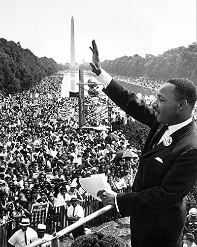

My Historical Figure: Martin Luther King, Jr.
Martin Luther King, Jr. is my favorite Historical Figure. He has been such
an inspiration not only to me, but to quite a few people.
Some of King's titles to people are:
- Baptist Minister
- Social Activist
- Civil Rights legend

Martin Luther King, Jr. made many important
achievements
in his lifetime and has made history with the things he has done to
make the world better. One of the things that everyone in the world was
made aware of through schooling was Dr. King's
"I have a dream" speech. A powerful speech to end racism and have civil
economic rights in the united states.
Learn more about
Martin Luther King, Jr.
By Amalia Hidalgo
Superhero 1.1 Enhancements
-
I learned how to import custom fonts a little bit better.
-
I learned how to add images as a background as well as editing their size and positioning if need be.
-
I learned how to use class elements and through that I learned how to use ID's and the difference
between the two.
-
I also learned how to change the background within a specific border
Enhancements:
-
I changed the width and height of MLK-DREAM image to make it smaller.
- I changed the background color to RGB 201, 201, 201.
-
I added a link at the bottom of the achievements page to come back to
the home page.
- I changed the font to be Verdana, Sans-serif
-
I made the learn more about..., By Amalia Hidalgo, and Back to Home
small.
- I underlined the headings.